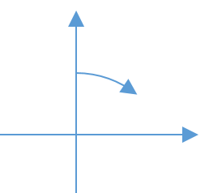
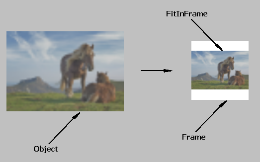

|
List of functions in package.
Running files and commands
|
|
bool LaunchFile(const char *file, const char *params = 0)
Opens the file file with params with the adecuated program defined in the OS by default.
Example:
LaunchFile("c:\\My spreadsheet.txt"). It will open default program (like gedit or notepad) with document "My spreadsheet.txt".
bool FileCat(const char *file, const char *appendFile)
Appends at the end of file the contents of file appendFile. file will be modified and appendFile will remain unchanged.
Returns true in case of success.
bool FileStrAppend(const char *file, const char *str)
Appends at the end of file the text str.
Returns true in case of success.
bool AppendFile(const char *filename, const char *str)
Appends at the end of file filename the text str.
Returns true in case of success.
template <typename T, typename... Args> String AppendFileNameX(T t, Args... args)
Like AppendFileName() but joining any number of paths .
String GetUpperFolder(const char *folderName)
Returns the name of the folder over folderName.
bool IsRootFolder(const char *folderName)
Returns false if there is a folder over folderName. It does not check if folderName exists.
String GetUpperFolder(const String &folderName)
Returns the folder over folderName.
String FileRealName(const char *path)
Returns the real name of path.(directory or file) with the right letter cases or "" if path.does not exist.
String GetNextFolder(const char *folder, const char *lastFolder)
Considering folder as a parent folder of lastFolder, it returns the folder under folder that is also parent of lastFolder.
For example: GetNextFolder("/home", "/home/user/documents") returns "/home/user".
int FileCompare(const char *path1, const char *path2)
Compares files path1 and path2.
It returns:
-2 if there are problems opening or reading from the files.
-1 if files are different.
1 if files are equal.
int64 FindStringInFile(const char *file, const String text, int64 pos0 = 0)
Search in file for string text from byte position pos0.
It returns
-2 if there are problems opening or reading from the file.
-1 if text is not found in file.
An int64 value indicating the byte where text is found.
Upp::int64 GetDirectoryLength(const char *directoryName)
Returns the size in bytes of the sum of all file sizes under directoryName.
Upp::int64 GetLength(const char *fileDirName)
Returns the size of fileDirName.
If it is a file, it returns its size.
If it is a folder, it returns the size in bytes of the sum of all file sizes under fileDirName.
bool DirectoryCopy(const char *dir, const char *newPlace)
Copy folder dir including all files and folders to newPlace.
Returns true in case of success.
bool SetReadOnly(const char *path, bool readOnly)
Sets path (file or folder) as read only or write permitted depending on the value of readOnly.
In Linux the permissions are set for user, group and others.
Returns true in case of success.
bool SetReadOnly(const char *path, bool user, bool group, bool others)
Sets path (file or folder) as read only or write permitted for user, group and others.
Returns true in case of success.
bool IsReadOnly(const char *path, bool &user, bool &group, bool &others)
Returns true in user, group or others if path (file or folder) is read only for some of those user groups.
Returns true in case of success.
String LoadFile_Safe(const String fileName)
Same as LoadFile(fileName) but it works in POSIX for files automatically generated by the OS.
U++ LoadFile() functions prior to loading the file into a String, get the length of the file to dimension the String that will get the file. This is not valid for OS generated virtual files where the file length returned by the OS is 0 (for example files under folder /proc in Linux)
LoadFile_Safe() just get the file bytes returned by the OS until the file end.
bool IsFile(const char *fileName)
Returns true if fileName is a file.
bool IsFolder(const char *fileName)
Returns true id fileName is a folder.
Vector<String> SearchFile(String dir, String condFile, String text, Vector<String> &errorList)
Returns an Array of Strings containing the file names with full path of the files under folder dir that comply with condition (with wildcards) condFile and that contain inside the text text.
errorList contains the errors.
Vector<String> SearchFile(String dir, String condFile, String text = "")
Returns an Array of Strings containing the file names with full path of the files under folder dir that comply with condition (with wildcards) condFile and that contain inside the text text.
void FileToTrashBin(const char *path)
Deletes file path.by sending it to the Trash Bin.
int64 TrashBinGetCount()
Returns the number of items (files and directories) located in the Trash Bin.
void TrashBinClear()
Removes all the items (files and directories) located in the Trash Bin.ç
File/Folder Handling "X" functions
|
|
File and folder handling functions with eXtras defined in EXT_FILE_FLAGS
enum EXT_FILE_FLAGS USE_TRASH_BIN = 1
If true, removed fildes and fodlers will be moved to the Trash (recycle) Bin.
enum EXT_FILE_FLAGS BROWSE_LINKS = 2
If true, folder functions will follow symbolic links.
enum EXT_FILE_FLAGS DELETE_READ_ONLY = 4
If true, file/folder deletion functions will not consider read only flag.
bool DeleteFolderDeepWildcardsX(const char *path, EXT_FILE_FLAGS flags = 0)
Delete all folders under path using flags that comply the condition in wildcards included in path.
Returns true in case of success.
bool DeleteFileDeepWildcardsX(const char *path, EXT_FILE_FLAGS flags = 0)
Delete all files under path using flags that comply the condition in wildcards included in path.
Returns true in case of success.
bool DeleteFolderDeepX(const char *path, EXT_FILE_FLAGS flags = 0)
Delete path folder and all files and folders under it using flags.
Returns true in case of success.
bool RenameDeepWildcardsX(const char *path, const char *namewc, const char *newname, bool forfile, bool forfolder, EXT_FILE_FLAGS flags = NO_FLAG)
Rename to newname the files (if forfile is set to true) and/or folders (if forfolder is set to true) under path that comply the condition in wildcards included in namewc using flags .
Returns true in case of success.
bool DirectoryCreateX(const char *path)
Creates path directory. Returns true if path exists.
bool FileMoveX(const char *oldpath, const char *newpath, EXT_FILE_FLAGS flags = NO_FLAG)
Moves or renames oldpath file to newpath using flags.
Returns true in case of success.
bool FileDeleteX(const char *path, EXT_FILE_FLAGS flags = NO_FLAG)
Deletes path file using flags.
Returns true in case of success.
bool DirectoryExistsX(const char *path, EXT_FILE_FLAGS flags = NO_FLAG)
Determines if directory path exists using EXT_FILE_FLAGS flags.
In Windows it mounts persistent but unmounted network drives.
String Trim(const String& s)
Like TrimBoth(), it removes left and right spaces in s. Spaces are chars like, ' ', '\t', '\n', ...
Vector<String> Tokenize(const String &str, const String &token, int pos = 0)
Returns all substrings in str beginning from pos that are between token.
void Tokenize(const String &str, const String &token, Vector<String> &ret, int pos = 0)
Sets in ret all substrings in str beginning from pos that are between token.
String Tokenize2(const String &str, const String &token, int &pos)
Finds the next token in str beginning from pos. token is a String that contains token identifier chars.
Returns the String from original pos to the char after found token or until the end of the String if no token is found. pos is updated to the next char after returned String, or Null if there are not more chars available.
It replaces old Tokenize function().
String Tokenize2(const String &str, const String &token)
Finds a token in str. token is a String that contains token identifier chars.
Returns the String to the char after found token or until the end of the String if no token is found.
It replaces old Tokenize function().
Vector<Vector <Value> > ReadCSV(const String strFile, char separator, bool bycols, bool removeRepeated)
Read a .csv file in String strFile where separator can be defined.
If bycols is set, the data is saved in [column][rows] order.
If removeRepeated then repeated rows will be deleted.
String WriteCSV(Vector<Vector <Value> > &data, char separator, bool bycols)
Save a .csv file to a String where separator can be defined.
If bycols is set, the data is supposed to be stored in [column][rows] order.
int ReverseFind(const String& s, const String& toFind, int from = 0)
Find in s the String toFind beginning in from in reverse order.
Similar to Find() but searching from the end of the String.
String FormatLong(long a)
Returns the long number a converted into a String.
String SecondsToString(double seconds, bool units = false, bool dec = true)
Converts an amount of seconds to a String formatted as HH:MM:SS.
If units is true the units (hours, mins, seconds) will be part of the text.
If dec is true it will show seconds decimals.
It is opposite to StringToSeconds()
double StringToSeconds(String str)
Converts a String str formatted as HH:MM:SS to a returned amount of seconds.
It is opposite to SecondsToString()
String HMSToString(int hour, int min, double seconds, bool units = false)
Returns a String containing hour, min and seconds formatted as HH:MM:SS.
If units is true the units (hours, mins, seconds) will be part of the text.
It is opposite to StringToHMS().
void StringToHMS(String durat, int &hour, int &min, double &seconds)
It converts a String durat formatted as HH:MM:SS to get hour, min and seconds.
It is opposite to HMSToString()
String BytesToString(uint64 bytes, bool units)
Converts an amount of bytes to a short String. If units is true, they will appear like in 123.4 Kb
::Time StrToTime(const char *s)
Like const char *StrToTime(struct Upp::Time& d, const char *s), but returning directly a Time.
::Date StrToDate(const char *s)
Like const char *StrToDate(struct Upp::Date& d, const char *s), but returning directly a Date.
String SeasonName(int i)
It returns the name of the season beginning from "winter" (i = 0).
String FormatDoubleAdjust(double d, double range)
Returns number d in range converted to a String, so that it has the right number of digits.
This function serves to show numbers in graph axis and other elements that require to show the minimum right quantity of digits from a double.
String FormatDoubleSize(double d, int fieldWidth, bool fillSpaces)
Returns number d converted to a String with the best resolution, using either fixed or exponential notation, filling exactly fieldWidth chars. If fillSpaces is set, returned string is filled with spaces at the left until fieldWidth.
String RemoveAccents(String str)
Returns str with the accented characters substituted with the most approximated ascii characters.
If the original letter is uppercase, begins a word and the second letter is lowercase, the substituted first letter will be uppercase and the second will be lowercase.
An accented letter can be substituted with one or some characters.
For example "Århus Ørsted Ñandú crème brûlée" is converted in "Aarhus Oersted Nandu creme brulee"
String FitFileName(const String fileName, int len)
Fits String fileName length until len removing just intermediate folder names replacing them with "...".
bool IsPunctuation(wchar c)
Returns true if c is a punctuation character.
String Replace(String str, String find, String replace)
Replaces in str substring find with replace string for all times find string appears.
String Replace(String str, char find, char replace)
Replaces in str char find with replace char for all times find char appears.
String GetTempFolder()
Gets the default temp files folder path.
template <class T> int Sign(T a)
Returns the sign of a:
+1 if a. is positive
0 if a is 0
-1 if a is negative.
template <class T> T Average(T a, T b)
Returns the average of a and b.
template <class T> T Average(T a, T b, T c)
Returns the average of a, b and c.
template <class T> T Average(T a, T b, T c, T d)
Returns the average of a, b, c and d.
template <class T> T pow2(T a)
Raises a to 2. Similar to sqr().
template <class T> T pow3(T a)
Raises a to 3.
template <class T> T pow4(T a)
Raises a to 4.
template <class T> bool Between(const T& val, const T& min, const T& max)
Returns true if val is between min and max.
template <class T> T AngleAdd360(T ang, T val)
Adds val to ang taking care that result is between 0 and 360º.
template <class T> const T Distance(const T& x1, const T& y1, const T& x2, const T& y2)
Returns the distance (euclidean) between (x1, y1) and (x2, y2).
template <class T> const T Distance(const Point_<T>& p1, const Point_<T>& p2)
Returns the distance (euclidean) between p1 and p2.
template <class T> const T Distance(const T& x1, const T& y1, const T& z1, const T& x2, const T& y2, const T& z2)
Returns the distance (euclidean) between (x1, y1 z1), and (x2, y2, z2).
template <class T> const double Angle(const T& x1, const T& y1, const T& x2, const T& y2)
Returns the slope of the line that crosses (x1, y1) and (x2, y2).
template <class T> const double Angle(const Point_<T>& p1, const Point_<T>& p2)
Returns the slope of the line that crosses p1 and p2.
bool Odd(int val)
Returns true if val is odd.
bool Even(int val)
Returns true if val is even.
int RoundEven(int val)
Returns val rounded to the upper even number or itself if it is even.
template <class T> T ToRad(T angle)
Returns angle in degrees converted to radians.
template <class T> T ToDeg(T angle)
Returns angle in radians converted to degrees.
template <class T> T atan2_360(T y, T x)
Like atan2() in degrees where 0º is vertical and angle rotates clockwise to 360º..

template <class T> Rect_<T> FitInFrame(const Size_<T> &frame, const Size_<T> &object)
Returns the rectangle in a Rect to fit inside frame the object maintaining the aspect ratio.

bool SaveImage(const Image &img, int qualityBpp, const String &fileName, String ext = "")
Saves Image img in file fileName with format ext. If ext is "", the format is taken from fileName extension.
qualityBpp is the quality (for jpg) or the bits per pixel (for other formats):
bool PrintImage(const Image &img, int x = 0, int y = 0, int width = Null, int height = Null)
Prints image img in coords. x, y, width, height.
void DrawRectLine(Draw& w, int x, int y, int width, int height, int lineWidth, const Color &color)
void DrawRectLine(Draw& w, Point &pos, const Size &s, int lineWidth, const Color &color)
void DrawRectLine(Draw& w, Rect &r, int lineWidth, const Color &color)
Draws a rectangle in Draw w defined by either x, y, width, height, or Point pos and Size s or Rect r, with line width lineWidth and Color color.
template <class T> T &GetDefinedParent(Ctrl *ths)
Search for the parent Ctrl of ths whose type is T.
Color RandomColor()
Returns a random color.
Color GetRainbowColor(int val16)
Returns a rainbow color from an input value val16 from 0 (Red) to 0xFFFF.
Image GetRect(const Image& orig, const Rect &r)
Returns a subimage delimited by Rect r taken from orig.
const RGBA *GetPixel(const Image &img, int x, int y)
Gets the color of a pixel in image img in coordinates x, y.
This pixel is read-only.
RGBA *GetPixel(ImageBuffer &img, int x, int y)
Gets the color of a pixel in image img in coordinates x, y.
This pixel is modifiable.
bool IsValid(const Image &img, int x, int y)
Returns true if coordinates x and y are inside Image img.
bool IsValid(ImageBuffer &img, int x, int y)
Returns true if coordinates x and y are inside ImageBuffer img.
template <class T> bool IsValid(const Image &img, T &t)
Returns true if point t is inside Image img.
template <class T> bool IsValid(ImageBuffer &img, T &t)
Returns true if point t is inside ImageBuffer img.
String GetExtExecutable(const String ext)
Gets the program that will open by default the files with extension ext.
Example:
GetExtExecutable("html") -> "Firefox.exe"
Vector<String> GetDriveList()
Returns an array with the paths to all drives, internal or external, identified in the system.
String Getcwd()
Returns an absolute file name representing the current process working directory.
Replaced by GetCurrentDurectory(.)
bool Chdir (const String &folder)
Sets the process's working directory to folder.
Returns true if successful.
Replaced by SetCurrentDurectory().
String GetDesktopManagerNew()
A more complete version of GetDesktopManager() based on GetOsInfo().
NON_REENTRANT_V
NON_REENTRANT(v)
It returns v if the function has been called in the same thread and it has not returned yet.
It is useful to avoid a function to be called twice in different situations, for example:
The function calls Ctrl::ProcessEvents(); If the function has been called when a button has been pressed, this button can be pressed again so the function can be called twice.
The function is called by ChildLostFocus() and it opens a new window using, lets say, PromptOK(). This way ChildLostFocus will be called twice: the second one because PromptOK() makes the field to loose the focus.
template <class T>
struct TempAssign
A class to temporary assign a value to a variable. Original value is set again to the variable after the class destructor.
TempAssign(T &val, T set)
Value of variable val is replaced temporarily with value set.
double tmGetTimeX()
High resolution clock. Returns time in seconds or Null in case of error.
template <class C> void Shuffle(C &data, int randomSeed = Null)
Shuffles Vector data. randomSeed is the seed for the random number generator.
If randomSeed is Null or not included, a new random seed is used every function call..
template <class T> bool EqualRatio(const T& a, const T& b, const T& ratio, const T& zero = 0)
Returns true if the difference ratio between a and b is lower than ratio. A value lower than zero is considered zero.
template <class Range> int Find(const Range& r, const typename Range::value_type& value, int from = 0)
Returns the id of the element of Range (Vector<>, Array<>, ...) r that is equal to value from id from. If nothing is found it returns -1.
template <class Range> int FindAdd(Range& r, const typename Range::value_type& value, int from = 0)
Returns the id of the element of Range (Vector<>, Array<>, ...) r that is equal to value from id from, adding it if is new.
template <class Range> int FindRatio(const Range& r, const typename Range::value_type& value, const typename Range::value_type& ratio, int from = 0)
Returns the element of Range (Vector<>, Array<>, ...) r whose difference ratio with value is lower than ratio searching from id from. If nothing is found it returns -1.
template <class Range> int FindAddRatio(Range& r, const typename Range::value_type& value, const typename Range::value_type& ratio, int from = 0)
Returns the id of the element of Range (Vector<>, Array<>, ...) r whose difference ratio with value is lower than ratio searching from id from, adding it if is new.
template <class Range> int FindDelta(const Range& r, const typename Range::value_type& value, const typename Range::value_type& delta, int from = 0)
Returns the element of Range (Vector<>, Array<>, ...) r whose difference with value is lower than delta searching from id from. If nothing is found it returns -1.
template <class Range> int FindAddDelta(Range& r, const typename Range::value_type& value, const typename Range::value_type& delta, int from = 0)
Returns the id of the element of Range (Vector<>, Array<>, ...) r whose difference with value is lower than delta searching from id from, adding it if is new.
template <class Range> int FindRoundDecimals(const Range& r, const typename Range::value_type& value, int numDecimals, int from = 0)
Returns the id of the element of Range (Vector<>, Array<>, ...) r that is equal to value from id from, rounding numDecimals decimals. If nothing is found it returns -1.
template <class Range> int FindClosest(const Range& r, const typename Range::value_type& value, int from = 0)
Returns the id of the closest element of Range (Vector<>, Array<>, ...) r to value counting from id from.
template <class Range> bool Compare(const Range& a, const Range& b)
Returns true if Ranges (Vector<>, Array<>, ...) a and b are equal.
template <class Range, class V> bool CompareRatio(const Range& a, const Range& b, const V& ratio)
Returns true if the elements of Ranges (Vector<>, Array<>, ...) a and b are closer than ratio.
template <class Range> String ToString(const Range& a)
Returns a String from a Range (Vector<>, Array<>, ...) a with elements separated with ';'.
int DamerauLevenshteinDistance(const char *s, const char *t, int alphabetLength = 256)
Calculates the Damerau Levenshtein distance between words s and t considering an alphabet of length alphabetLength.
The algorithm is documented here and here.
String GetPythonDeclaration(const String &include)
Returns the Python ctypes declarations based on C declarations in include.
int LevenshteinDistance(const char *s, const char *t)
Calculates the Levenshtein distance between words s and t.
The algorithm is documented here.
bool GetRelativePath(String from, String path, String& ret, bool normalize)
Returns the relative path to go from from to path in ret and returns true if there is a match.
For example, if:
from = "/books/technology/computers"
path = "/books/biology/mammals"
GetRelativePath() would return "../../biology/mammals".
If there is no match between both paths it returns false.
If normalize is set, path separators and upper/lower letters are normalized following OS standards.
|
{kind=link}
{kind=link}